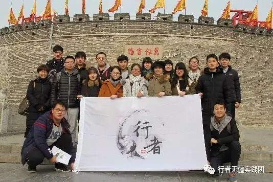
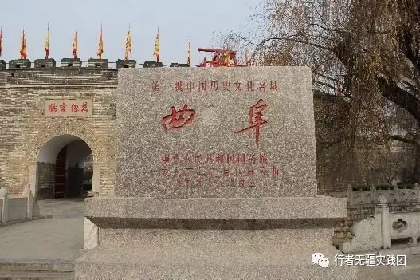
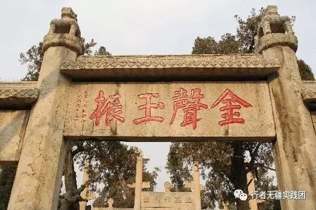
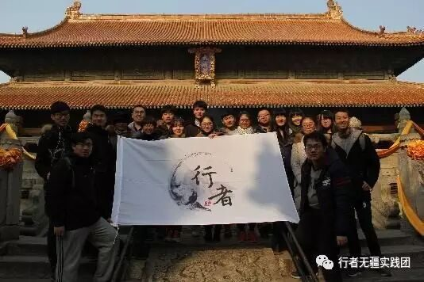
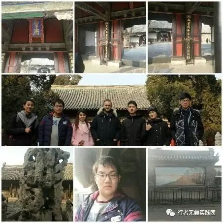
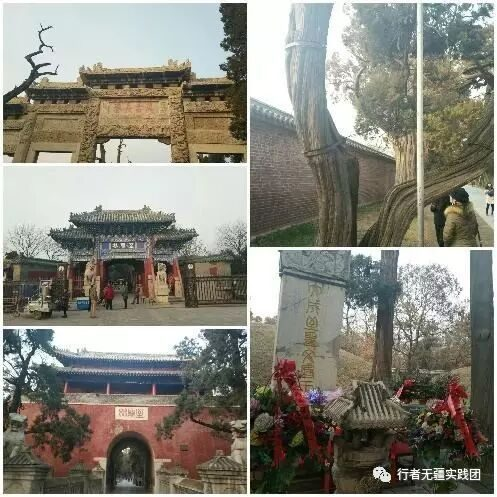
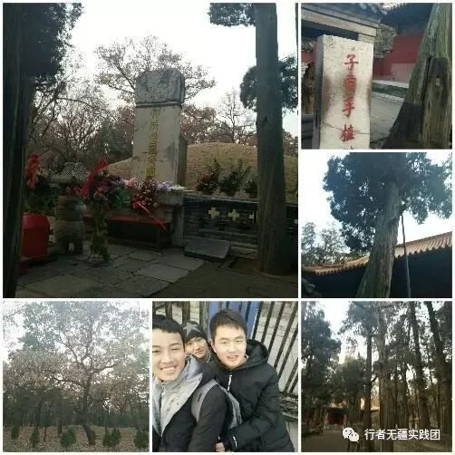

来自行者的第十一封信|“三孔”漫笔
“三孔”漫笔
文：孔超逸
对于孔子的崇拜，源于上学时代，“学而不思者罔，思而不学则殆”的思想曾一直深深地扎根于我的脑海。怀着对圣人的敬仰之情，我们踏上了这片孕育着儒家文化的土地。


古老的孔庙以其深厚的文化底蕴亲切地迎接着来自四面八方的拜访者，一棵棵古树用它千姿百态的英姿诉说着岁月的更替，“金声玉振”四个闪闪生辉的大字让人不禁肃然起敬，杏坛披挂着历史的风采，伴随着萧瑟的杏叶抖动声向我们讲述着它文雅的心语。恍然间，仿佛从遥远的历史长河中传来了孔子赐教的淳淳教导声。试想，在这样的环境中读书，书与自然融为一体，人与自然和-谐相处，岂不美哉？怪不得有七十二贤呢！

“大成殿”是孔庙的正殿，为孔庙的核心，是祭祀孔子的中心场所，这里金碧辉煌，雕梁画栋，气势磅礴，香烟缭绕。殿下有十根浮雕水磨大理石石柱，每柱二龙对翔，盘绕升腾，传说每根石柱都是由一整块巨石雕刻而成，可见古人之智慧。相传乾隆皇帝到此处祭拜孔子，因怕皇帝见到这些超过皇宫的龙柱而怪罪，遂用红布将这些龙柱包起来，而骗过了皇帝的眼睛，于是就有了“皇帝看龙隔着布”的传说。

孔府里有一幅画，为“戒贪图”，衍圣公将此画绘在内室的屏门上，时时告诫子孙不要贪赃枉法，说明了孔府人崇尚清廉的道德修养；孔府里有一个槽，为“水槽”，突出在一面大墙上，原来在古代强调男女有别，男女授受不亲，男性的下人自然见不到女眷，只好建一水槽，于内宅门墙上建石流以供用水流入内宅。幸得生于这开放年代，女子才可以走出家门，工作建业，游山玩水，拜师结友，要不然整日困于这深墙大宅之中，还不郁闷死了？幸哉，幸哉！孔府里有一个园，为“后花园”，是衍圣公夫人及小姐游山玩水的地方，这里有山有水，有花有草，有林有桥，这里，可观赏，可嬉戏，可静坐，可沉思......

一进入孔林首先映入眼帘的是一条石板铺砌而成的两侧植有松柏的马路，这段路长约一里，又叫“一里路”，寓意为“以理服人”。路两旁的松柏，有的挺拔直立，有的屈曲盘绕，虽遗留着沧桑岁月留下的斑驳痕迹，却依然苍翠茂盛、生机勃勃。左侧72棵，代表孔子的七十二位贤弟-子，右侧73棵，代表孔子的七十三岁年龄。

“子贡手指楷”的碑后，有一棵枯死的楷树，传说是孔子去世后，子贡为纪念先师亲手所植，虽经历历史和岁月的沧桑早已枯死成了桩杆，却毫不腐烂，也许这就是子贡深深的敬师之情吧！相传孔子死后，众弟-子守孝三年后纷纷离去，唯子贡在此守了七年，不愧是尊师敬师的典范，其情可嘉，其行可表。沿着甬道继续走，左侧有一座高起的坟丘，是孔子孙子孔佶的坟墓，墓前的一对翁仲，已有八-九百岁的高龄了，却依然忠实地站立在那里。再往后走，有两座并排的高大坟丘，左边是孔子墓，右边是孔子的儿子孔鲤墓，三座坟墓呈现出一幅“携子抱孙”的画面。

整个孔林氏族墓地有三千余亩，古碑四千余块，坟墓十万余座，树木十万余株，碧草茵茵，树木茂盛，庄严肃穆，苍松翠柏郁郁葱葱，静静地守候着圣贤的陵墓，看着一代又一代的人走过他们的身边，怀着敬仰，带着缅怀，携着感慨.......

逛曲阜，游三孔，
穿行在几个朝代所形成的古建筑群，
发一番思古之幽情，
品一场文化之盛宴，
美哉，美哉！